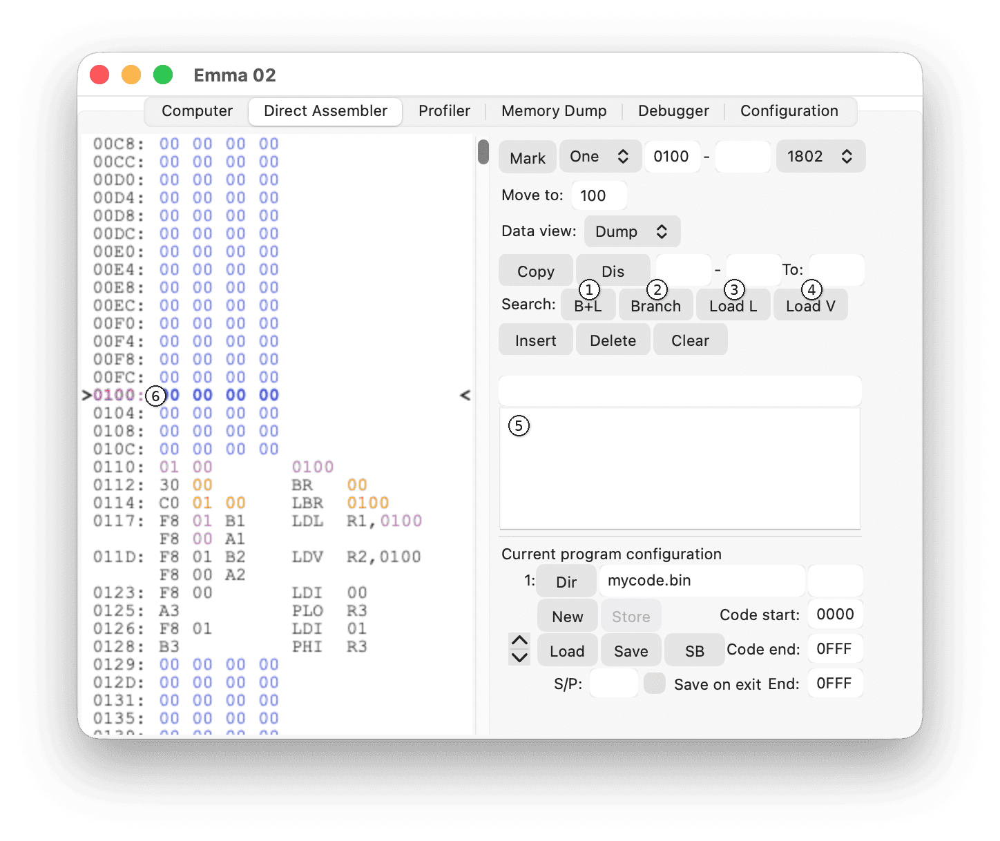
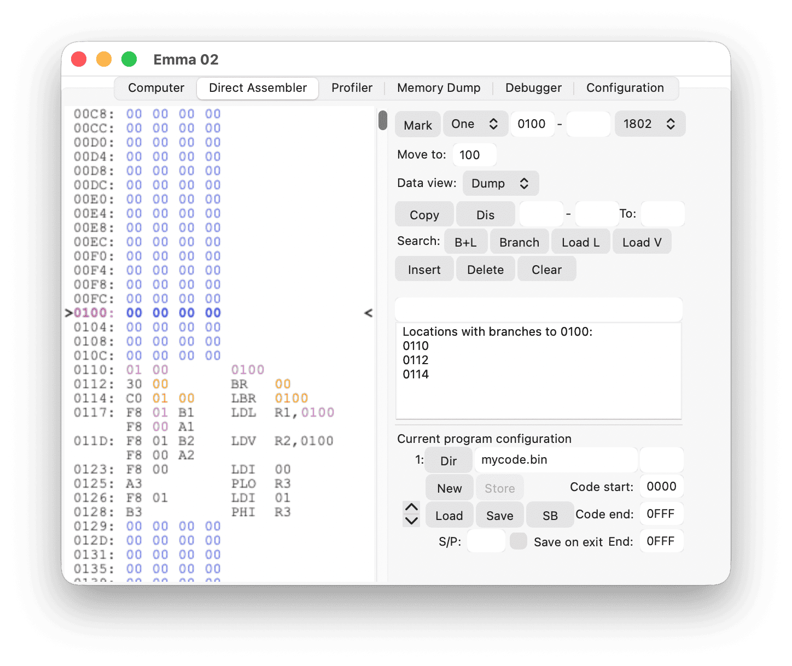
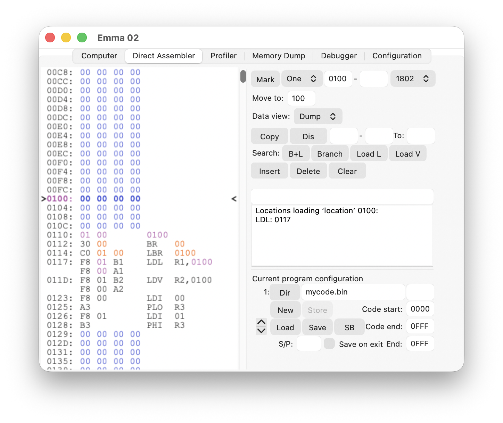
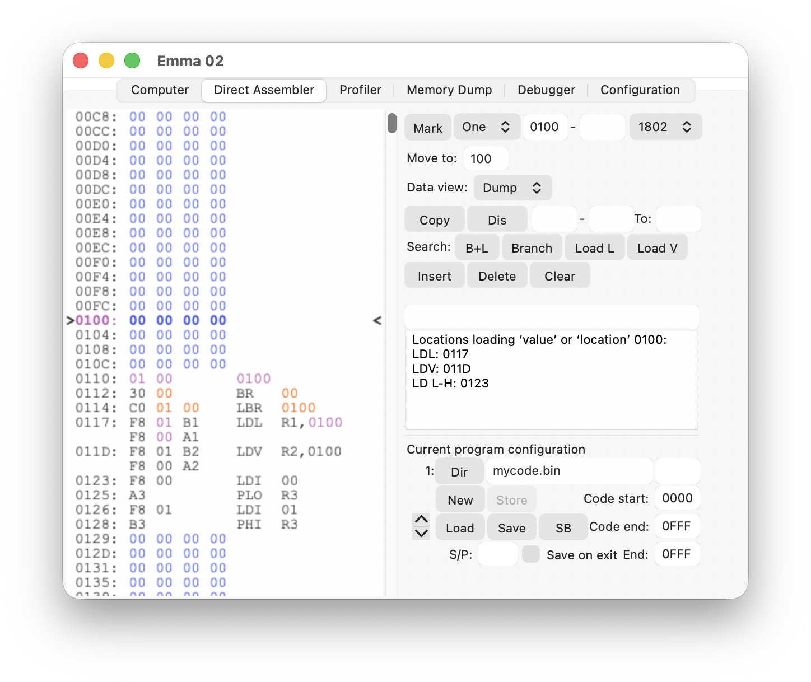

Four search options are available: B+L, Branch, Load L, and Load V:

All search features will search code and data areas as defined in the Program Configuration. Results will be listed in the message field (5).
The B+L button (1) executes both a Branch and Load L search; see the following two sections for details.
The Branch button (2) searches for branches to the current working address (6).
In the example below, a branch search on address 0100 (hexadecimal) will give the following message:

The Load L button (3) searches for instructions (LDL, LDRL, and RLDL) loading the location of the current working address (6).
In the example below, a Load L search on address 0100 (hexadecimal) will give the following message:

The Load V button (4) searches for instructions loading the location or value of the current working address (6).
Note: With Load V, all possible load instructions will be listed as follows:
LD H-L: instruction sequence LDI xx, PHI RN, LDI xx, PLO RNLD L-H: instruction sequence LDI xx, PLO RN, LDI xx, PHI RNRLDI: RLDI RN,xxxxLD H: instruction sequence LDI xx, PHI RN (only loading high byte of current address)LD L: instruction sequence LDI xx, PLO RN (only loading low byte of current address)LDV: LDV macroLDL: LDL macroLDRL: LDRL macroRLDL: RLDL macroIn the example below, a Load V search on address 0100 (hexadecimal) will give the following message:
